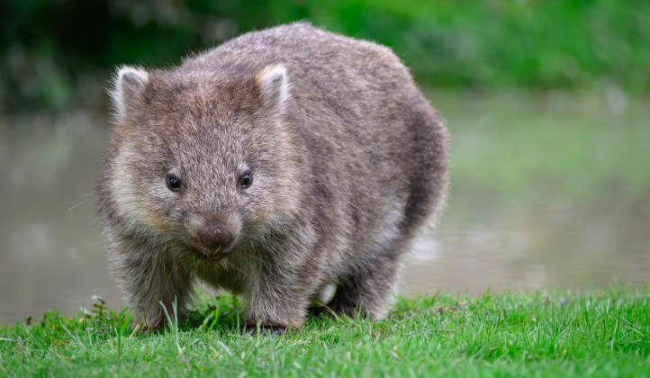

Lifespan: 15 years in the wild, up to 20 years in captivity
Top speed: Up to 25 mph in short bursts
Weight: Up to 60 lbs
Diet: Mainly native grasses, also roots and herbaceous plants
Predators: Introduced animals like foxes, dingoes, and wild dogs, young are eaten by eagles and tasmanian devils.
Range: Southeastern Australia, Tasmania
Conservation Status: Least concern
Fun Fact: A group of wombats is called a wisdom.
Fun Fact: Wombats poop cubes. This is because they use poop to mark their territory, and cube-shaped poop doesn't roll away.